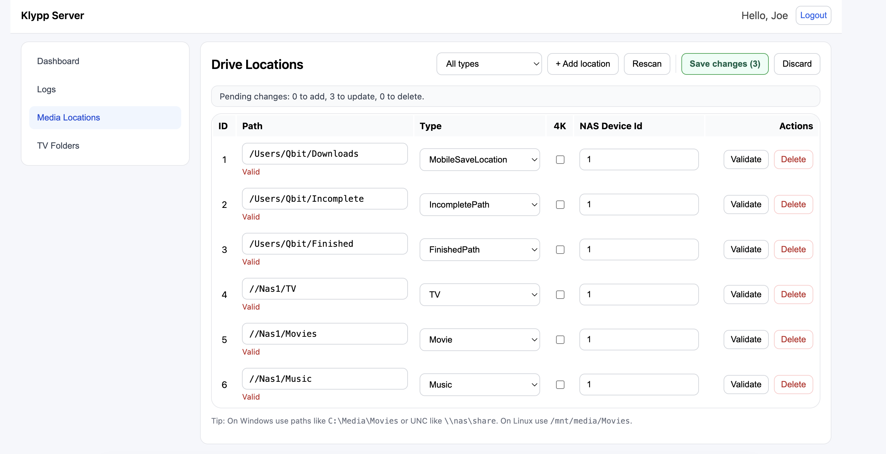
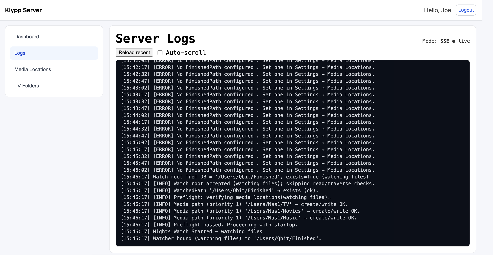
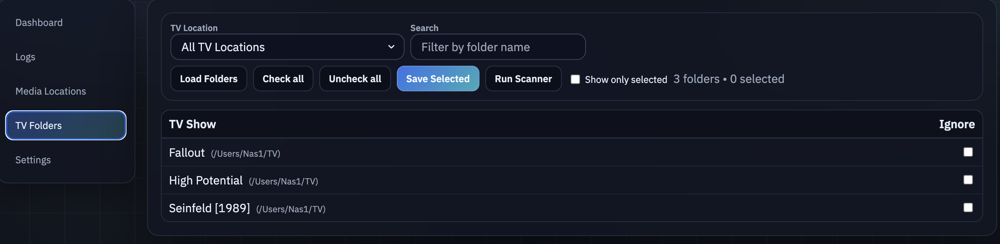
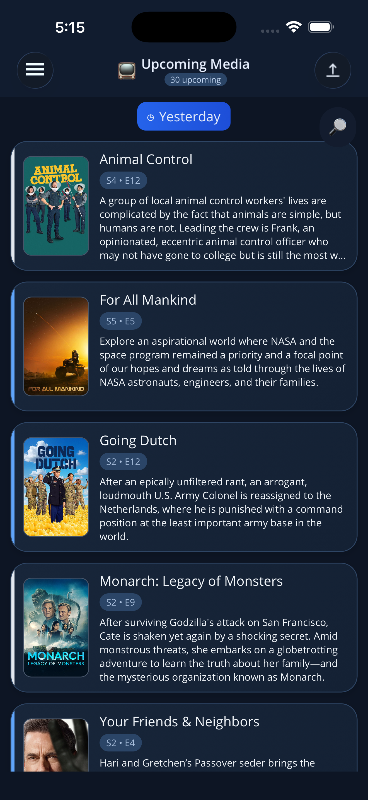
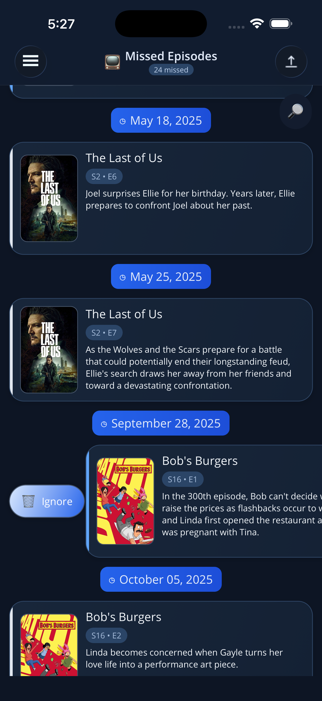
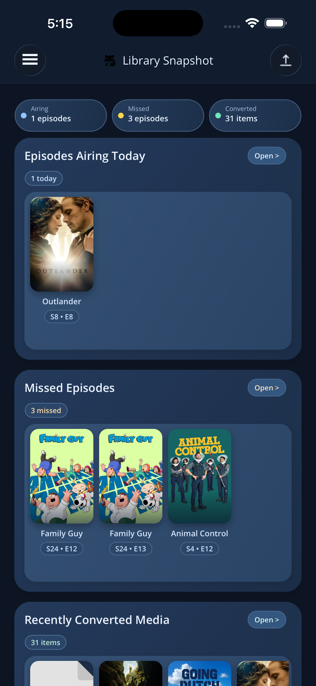
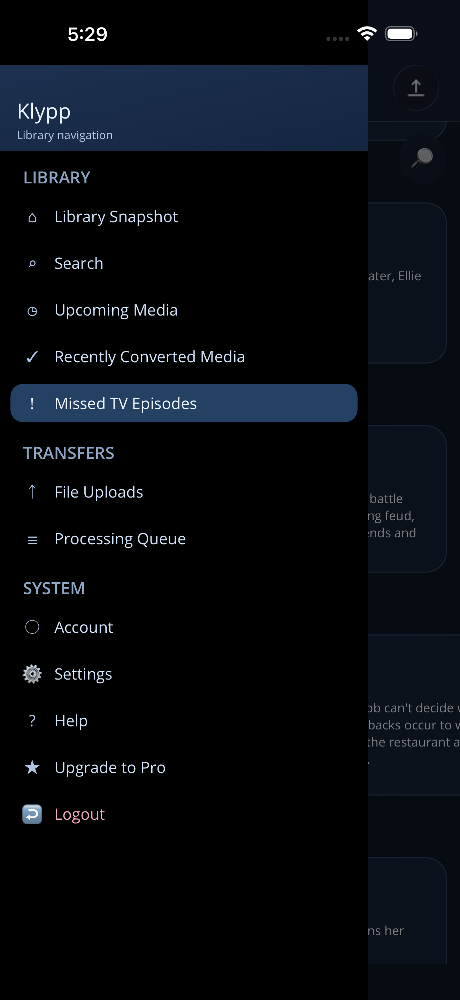
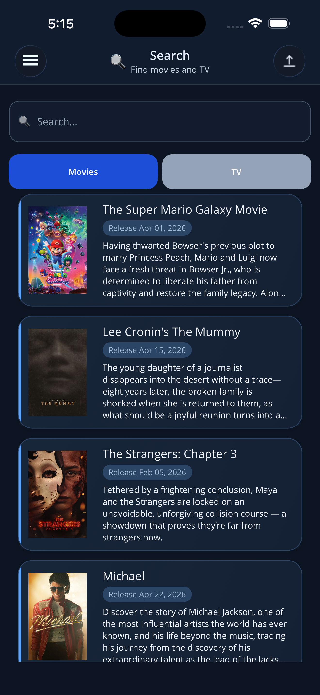
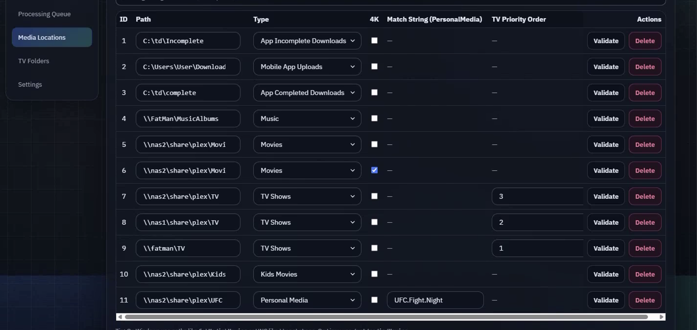
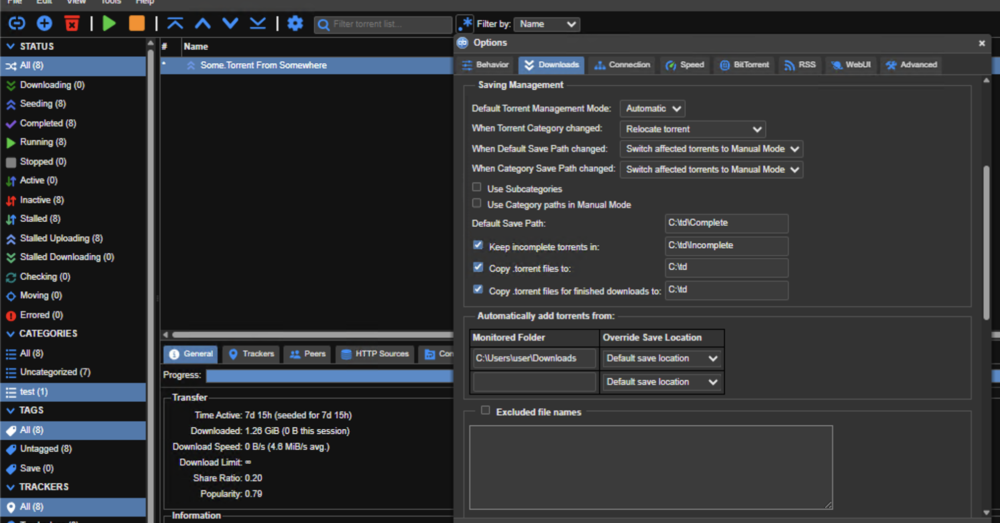

Definitions of Media Locations
There are two types of drive locations that should be setup: pre-processing and post-processing locations.
Pre-processing locations are folders that Klypp uses before it processes the files that it finds.
Recommended flow: FileSaveLocation → IncompletePath → CompletedPath
- FileSaveLocation - When a file is uploaded from your mobile device, Klypp will save it into this location.
- IncompletePath - A staging folder for in-progress transfers. Point this to where partially written files live so Klypp can wait until they finish.
- CompletedPath - A ready-to-process folder. Once files are complete, place them here so Klypp knows when to start organizing them.
Destination locations: destinations for the files and folders after Klypp has processed them.
- Music - All music is copied to this location. The 4K box is ignored for music.
- TV/TV4K - TV episodes are copied to this location.
- Movie/Movie4K - Movies are copied to this location.
- KidsTV/KidsTV4K - This location, if it is setup, overrides other TV locations for TV shows that are for younger audiences.
- KidsMovie/KidsMovie4K - This location, if it is setup, overrides other Movie locations for movies that are for younger audiences.
- 4K - Video content (movies and TV episodes) can be separated by whether or not the transferred media is 4K. See the advanced setup guide for examples.
Basic Setup
For the most basic setup, add locations for Music, TV, and Movies (all with the 4K box unchecked). With this setup, Klypp will move all movies into the Movies location, all TV episodes into the TV location, and all music into the Music location.

After you map these folders, Klypp Server will monitor CompletedPath and move files into your library automatically.
On Linux or MacOS, you may need to adjust permissions. The service runs under the
klypp user to keep access isolated from your personal account.

If you already have TV shows, you can scan your existing folders to populate the mobile app, or start fresh with a new folder just for Klypp. Missing episodes can be managed from either the web UI or the mobile app.

After a scan or a new upload, the mobile app will show your media.



Use Snapshot for quick monitoring, Media Transfers for file progress, and Processing Queue to review move priority.



Use the flyout to move between screens quickly, then search across TV shows and movies.


Using Klypp with a Torrent Client
If you use torrents to legally obtain media, you can connect Klypp Server to a torrent
client by sharing its download folders with Klypp. This lets you send a .torrent file from
your mobile device to your server, have the torrent client download it, and then let Klypp organize the
completed media.
This example uses qBittorrent, but the same workflow works with many torrent clients. The
setting names and screens may differ, but you will generally need a client that can watch for new
.torrent files and use download folders you control.
Klypp Server folder settings
Klypp Server uses three folders for this workflow:
- Mobile App Uploads — Where files uploaded from your mobile device are saved to the server.
- App Incomplete Downloads — Where incomplete torrent downloads are stored while they are downloading.
- App Completed Downloads — Where completed downloads are placed. Klypp Server watches this folder and picks up new media to move it to its final movie, TV, music, or custom-rule destination.
In this example, Mobile App Uploads is set to
C:\Users\user\Downloads, App Incomplete Downloads is set to
C:\td\Incomplete, and App Completed Downloads is set to the folder where
your torrent client places finished downloads.

Your Klypp Server destination rules can be as simple or as detailed as you need. For
example, you may use separate NAS locations for movies and TV, or create a custom matching rule for files
containing UFC.Fight.Night. These rules work for torrent downloads as well as any other media
that appears in the completed-downloads folder.
Torrent client setup
Configure your torrent client to use the same folders:
- Watch
C:\Users\user\Downloadsfor new.torrentfiles. - Store active or incomplete downloads in
C:\td\Incomplete. - Move finished downloads to the folder configured as App Completed Downloads.
The exact names of these options vary between clients. In qBittorrent, these settings are available in its download and folder settings.
Optional RSS automation
Many torrent clients can monitor RSS feeds and automatically add matching
.torrent files. When enabled, the torrent client starts the download in
App Incomplete Downloads, moves it to App Completed Downloads when
finished, and Klypp Server organizes the completed media as usual. No manual upload from Klypp Mobile is
required. You can optionally enable notifications when new media is added.

How the workflow operates
- From the Klypp mobile app, send a
.torrentfile to your server. - Klypp saves the file in Mobile App Uploads:
C:\Users\user\Downloads. - Your torrent client detects the new file and starts downloading it.
- While the torrent is downloading, its files remain in App Incomplete Downloads:
C:\td\Incomplete. - When the torrent finishes, the client moves the completed files to App Completed Downloads.
- Klypp Server detects the new media, checks it against your movie, TV, music, and custom matching rules, and moves it to the correct final destination.
For example, a file matching UFC.Fight.Night can follow a custom rule, while
recognized movies, TV episodes, and music follow their normal Klypp destination settings.
Other valid setups
There are many ways to connect a torrent client to Klypp. The separate incomplete and completed folders shown above are a straightforward example because they make the download flow easier to understand and troubleshoot. Some torrent clients can use the same folder for incomplete and completed downloads. This can work, but it is usually more complicated to configure and manage because Klypp needs to avoid processing files before they are fully downloaded. Your setup may vary depending on your torrent client, storage layout, and how you prefer to organize your media.
Important: Only use this workflow for media you are legally authorized to download and share. Klypp does not provide torrent content or determine whether downloaded media is lawful.
Processing Queue & Jump Queue
If you have a large queue and want one item processed first, use Jump Queue from the mobile app or Klypp Server. The selected file moves to the front of the queue and is processed next.
This is useful when you need a specific movie, TV episode, or other media available before the rest of the queue finishes.
How it Works (Simple, UI-Based)
The basic setup can be extended into a more granular version by adding KidsTV and KidsMovies to the mix. Klypp uses metadata from The Movie Database (TMDB) to determine which movies and shows are for kids, and puts them into their own locations.
To get even more advanced, you can check the 4K box for any of the movie and TV locations. When using the 4K box, it's recommended to also have a location with the 4K box unchecked (ie, one Movies location for non-4K content, and one for 4K content).
And finally, for the most advanced setup, you can split your locations across multiple storage devices. For example, if you have 2 Network Attached Storage (NAS) devices, you can tell Klypp to prioritize one over the other for each location. Klypp is smart enough to detect if you already have a TV show on one of the devices, and it will keep putting new episodes for that show on that device, regardless of the priority order.
To summarize: Klypp routes each media title based on two things:
- Type you can configure: Movies, KidsMovies, Television, KidsTelevision
- Whether that location’s 4K checkbox is ON (4K path) or OFF (non-4K path)
There are no special names like “Kids4kMovies.” You simply enable a destination and choose if it’s for 4K or not. You can enable both a non-4K and a 4K path for the same type.
Common Movie Setups
1) One folder (catch-all)
- Configure: Movies (4K OFF) →
C:\Movies\ - Result: non-4K, 4K, and kids movies all land under
C:\Movies\.
2) 4K / non-4K split
- Configure: Movies (4K OFF) →
C:\Movies\ - Configure: Movies (4K ON) →
C:\4kMovies\ - Result: 4K →
C:\4kMovies\; everything else (incl. kids) →C:\Movies\.
3) Separate kids (optional)
- Add KidsMovies (4K OFF) → kids go there; non-kids follow the Movie flow above.
- (Optional) Add KidsMovies (4K ON) if you also want kids-4K split.
TV Setups (Practical Examples)
1) One folder (catch-all)
- Configure: Television (4K OFF) →
C:\TV\ - Result: kids + non-kids + 4K all land under
C:\TV\.
2) 4K / non-4K split
- Configure: Television (4K OFF) →
C:\TV\ - Configure: Television (4K ON) →
C:\UHDTV\ - Result: 4K →
C:\UHDTV\; everything else (incl. kids) →C:\TV\.
3) Separate kids (non-4K)
- Configure: KidsTelevision (4K OFF) →
C:\KidsTV\ - Configure: Television (4K OFF) →
C:\TV\ - (Optional) Television (4K ON) →
C:\UHDTV\ - Result: kids (non-4K) →
C:\KidsTV\; non-kids follow the TV/UHD flow.
4) Separate kids + 4K split
- Configure: KidsTelevision (4K OFF) →
C:\KidsTV\ - Configure: KidsTelevision (4K ON) →
C:\KidsUHDTV\ - Configure: Television (4K OFF) →
C:\TV\ - Configure: Television (4K ON) →
C:\UHDTV\ - Result:
- Kids 4K →
C:\KidsUHDTV\ - Kids non-4K →
C:\KidsTV\ - Non-kids 4K →
C:\UHDTV\ - Non-kids non-4K →
C:\TV\
- Kids 4K →
5) Kids-only (no catch-all)
- Configure: KidsTelevision (4K OFF) →
C:\KidsTV\ - Result: kids route; non-kids are skipped with a message.
6) 4K-only (no non-4K)
- Configure: Television (4K ON) →
C:\UHDTV\ - Result: 4K routes; non-4K are skipped with a message.
TV: Multiple Drives & Priority (Exact Behavior)
Each TV destination can have several paths, each with a Priority number. The app checks them in order: 1 → 2 → 3 → … → N.
- Colocate if found: As it scans from 1 upward, if it finds the show folder on any drive, it uses that same drive for the new season/episode (keeps the show intact).
- New shows land on the last drive: If the scan reaches the end (N) without finding the show, the app creates the show on drive N (the last/lowest-priority drive).
- Why this matters: You can add new drives (higher numbers) while older lower-number drives fill up. Existing shows keep writing where they already live, and new shows naturally start on the newest “last” drive.
- If you remove a drive from the copy list: The app will write to whatever remains in the 1→N sequence. Doing this mid-series can split a show across drives, so prefer leaving older drives mounted and adding new ones with higher numbers. If you plan to retire a drive, wait until all shows on it have finished airing (or relocate them intentionally) before removing it.
In short: Scan priorities 1..N → if show exists at k, write to k; if not found anywhere, create on N.